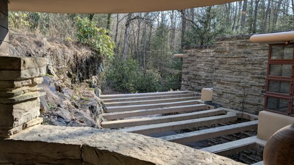
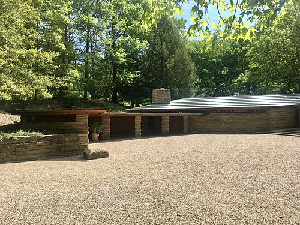
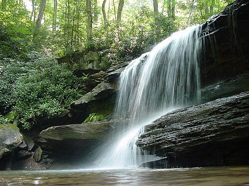

This map shows 5 of the most-searched sights in Fallingwater as photo spots, ranked by how often people search for them: Fallingwater, Kentuck Knob, Ohiopyle State Park, Ohiopyle High Bridge and Bear Run lead the list. Every spot has a pin on the subject and a phone icon showing where to stand, with tips for shooting it on your phone: which lens to use, how to frame it, a settings tip and the best time of day. Directions and Navigate buttons take you to the standing point on foot or by public transport. 3 spots are free to view; the full map is for members.
The 3 free photo spots
1Fallingwater

Fallingwater is a house museum in the Laurel Highlands of southwestern Pennsylvania, designed by Frank Lloyd Wright as a weekend retreat for Edgar J. Kaufmann Sr. and his wife Liliane. It is built partly over a waterfall on the Bear Run stream. Its long concrete terraces are cantilevered, reaching out from a chimney with no support at the far end. That gives you strong horizontal lines to set against the rock, the trees and the moving water. The house is made of locally quarried stone, reinforced concrete, steel and plate glass, so the textures also reward a closer look. The Kaufmanns began using the house in 1937, and the Western Pennsylvania Conservancy has run it as a visitor attraction since 1963. It is a National Historic Landmark and part of a World Heritage Site. The house sits under a canopy of forest and is not on a prominent hilltop, so expect dappled light and a lot of green around it. The phone icon on the map is about 40 m north-west of the subject. That is close enough to fit the main block in one frame with the ultra-wide lens (0.5x), and to pick out terraces and stonework with the zoom. Take a wide shot first, then a few tighter ones. The stream can freeze in winter and dry up in summer, so the waterfall will not always look the same.
Where it is: Fallingwater stands in Stewart Township, Fayette County, above the Bear Run stream, between the communities of Ohiopyle and Mill Run.
Shooting it on your phone
Lens: Start with the ultra-wide (0.5x) to fit the whole house and its terraces from this close. Then switch to the default lens (1x) for a more natural view. Use the telephoto (2x-5x, depending on your phone) for details such as the stonework, the glass and the edges of the terraces.
Where to stand: Stand about 40 m north-west of the subject, at the phone icon on the map, and face south-east. Take a few steps to either side if trees block part of the view.
Framing: Turn on gridlines and line up the long terrace edges with them so the horizontal lines stay level. Keep a little of the surrounding trees and rock in the frame to show how the house sits in the landscape. Try one wide shot and one tighter shot of the terraces. Hold your phone steady against a rail or tree if one is nearby.
Settings tip: Tap on the stonework to focus, then drag the exposure slider down slightly so the bright sky and water do not wash out. If the light is patchy, take two or three shots and keep the best. A Live Photo can catch moving leaves or water. Use panorama only if you can move slowly and keep the phone level.
Best time: Soft, even light on an overcast day suits the stonework and green canopy, with less harsh dappled shadow. Whenever you go, check the official site for visiting times before you set out.
2Kentuck Knob

Kentuck Knob is a small house designed by Frank Lloyd Wright for I. N. Hagan, an ice-cream company owner, and his wife Bernardine. It was completed in 1956 and sits on the southern slope of a wooded knoll. The walls are locally quarried stone and redwood, with a broad overhanging copper roof, and the plan is built around a hexagon. It is a National Historic Landmark. The house is a few miles from Fallingwater, and the Hagans first heard of Wright through the family who built Fallingwater.
It photographs well because the low roofline and the stone seem to grow out of the hillside. The best exterior view is usually from the back. From the informal overlook on the east side of the house, about 100 m south-east of it, you see the sandstone walls and the cantilevered roof, with the Youghiogheny River gorge and Laurel Highlands ridges behind. Trees can screen the gorge itself, so expect the ridges and treetops to do most of the work in the background. The entrance side, with the carport and the roofline set into the hill, is a good second shot. So is a side view from higher up the hillside, framed by trees.
No photography is allowed inside the house, so plan on outdoor pictures only.
Where it is: Kentuck Knob is in Stewart Township, Fayette County, Pennsylvania, a few miles from Fallingwater rather than in the town itself. The house stands on the southern slope of a wooded knoll above the Youghiogheny River gorge.
Shooting it on your phone
Lens: Start with the default lens (1x) for the house and ridges together. Switch to the ultra-wide (0.5x) if you are close and the roof gets cut off. Use the telephoto (2x-5x, depending on your phone) for details of the stone and the copper roof edge.
Where to stand: Stand on Kentuck Knob Overlook (a few steps from the back terrace, on the east side of the house). The house's rear side with its sandstone walls and cantilevered roof, with the Youghiogheny River gorge and Laurel Highlands ridges behind it. From here the house lies to the north-west. You see its rear side with the sandstone walls and cantilevered roof, and the gorge and ridges behind.
Framing: Turn on gridlines and put the roofline along the upper third, with the ridges above it. Keep the horizon level, since the long horizontal roof shows any tilt. For a different view, try the entrance side with the carport, or a side view from the hillside framed by trees.
Settings tip: Tap the stone wall to set focus, then lower the exposure slider a little so the sky and ridges keep some colour. If the roof overhang makes the walls too dark, tap the shaded wall and raise the exposure slightly. Try a panorama only if you can keep the phone steady and level.
Best time: Soft, even light on a bright overcast day suits the stone and the copper roof, because it avoids hard shadows under the overhang. Autumn leaf colour could add warmth to the trees around the house.
3Ohiopyle State Park

Ohiopyle State Park covers about 20,500 acres of forested gorge country in Fayette County, Pennsylvania, and Ohiopyle Falls is its best-known sight. The falls are only about 20 feet (6 m) high, but they stretch right across the Youghiogheny River, so the picture is all about width and moving white water. The name comes from a Lenape phrase meaning 'it turns very white', which suits the frothy water. Guides call this the most photographed spot in the park. From the Ohiopyle Falls Observation Deck you look across the full width of the falls, with the tree-covered Ferncliff Peninsula behind. The deck is beside the parking lot on Main Street (Route 381), so it is the easiest viewpoint to reach. The park opened to the public in 1965 and was formally dedicated in 1971. It sits on the site of old railway-age resorts that drew visitors to the falls. For a different angle, Baughman Rock Overlook gives long views down the river gorge, and the Ohiopyle High Bridge looks down on the rapids through its arches. Kayakers sometimes run the rapids below. Take a few wide shots first, then move in for details of the water. The falls area was reported as being rebuilt, so check current construction and parking before you go.
Where it is: This spot is in the village of Ohiopyle, in the Falls Day Use Area at the centre of Ohiopyle State Park, beside the parking lot on Main Street (Route 381). It is several miles from the Fallingwater house itself.
Shooting it on your phone
Lens: Start with the ultra-wide (0.5x) to take in the whole width of the falls and the forest behind. Switch to the default lens (1x) for a calmer, more natural view. Use the telephoto (2x-5x, depending on your phone) to pick out the white water or the trees of Ferncliff Peninsula.
Where to stand: Stand right at the subject (observation decks beside the parking lot on Main Street / Route 381). The full width of Ohiopyle Falls spanning the Youghiogheny River, with the forested Ferncliff Peninsula behind it. You are looking at Ohiopyle Falls across the Youghiogheny River, with the forested Ferncliff Peninsula behind; the deck gives you the full width of the falls.
Framing: Turn on gridlines and place the lip of the falls along a lower line, so the water fills the frame and the trees sit above it. Try one wide shot and one tighter zoomed shot. If you have time, Baughman Rock Overlook is a good second viewpoint for long gorge views.
Settings tip: Tap on the brightest white water to focus, then slide the exposure down a little so the foam keeps its detail. Try a Live Photo to catch the movement of the water. Wipe your lens first, as spray may smear it.
Best time: Early morning or late afternoon, when the light is softer and there is less glare on the water.
2 more spots for members
These spots are on the map as grey numbered pins. Where to stand, the phone tips, photos and directions for them come with Explorer membership.
- 4Ohiopyle High Bridge · members
- 6Bear Run · members
Get every spot with Explorer membership
Explorer opens every spot on every map in the library: where to stand, how to frame it on your phone and how to get there, plus the Xdatrys Maps app with maps saved on your phone for use without signal. $9.99 a month or $59.99 a year; cancel any time.
Join Explorer Compare free and Explorer
Not ready to join?
Get Pocket Lens, our free daily smartphone travel photography newsletter.
Free, and you can unsubscribe at any time. If the form does not show, sign up on our newsletter page.
Questions
What are the top photo spots in Fallingwater?
The first three on this map are Fallingwater, Kentuck Knob and Ohiopyle State Park. They are ranked by how often people search for them. The full map has 5.
Where should I stand to photograph Fallingwater?
Stand about 40 m north-west of Fallingwater, at the phone icon on the map, and face south-east. Start with the ultra-wide (0.5x) to fit the whole house and its terraces from this close.
When is the best time to photograph Kentuck Knob?
Soft, even light on a bright overcast day suits the stone and the copper roof, because it avoids hard shadows under the overhang. Autumn leaf colour could add warmth to the trees around the house.
How do I get to Ohiopyle State Park?
No Underground, train or tram stops are listed for this spot.
Credits
Map data © OpenStreetMap contributors (ODbL); base map built with Protomaps from OpenStreetMap data. Photos from Wikimedia Commons, credited under each photo with their licence. Background reading for the free spots: Fallingwater, Kentuck Knob, Ohiopyle State Park (Wikipedia, CC BY-SA). Access rules and opening times change: check before you go.